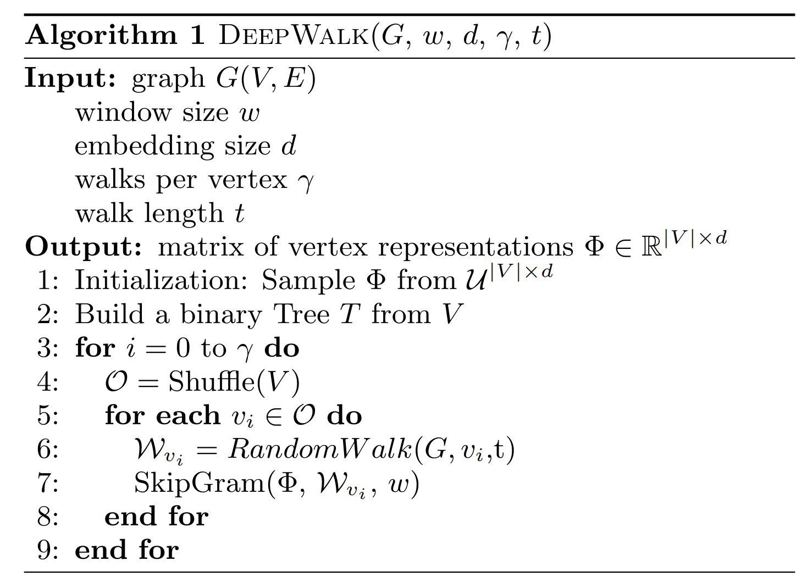
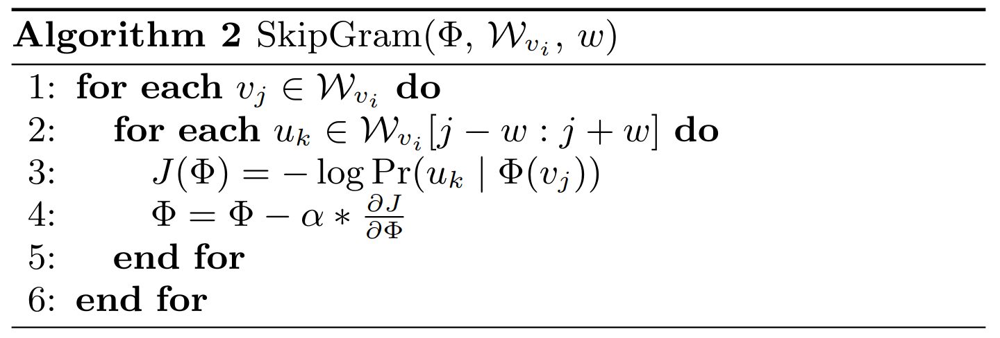

class: center, middle, title-slide count: false # Deep Learning on Graphs<br/> # (1/3) <br/><br/> .bold[Marc Lelarge] .bold[[www.dataflowr.com](https://www.dataflowr.com)] --- # (1) Node embedding ## Language model ### one fixed graph, no signal. Ex: community detection # .gray[(2) Signal processing on graphs] ## .gray[Fourier analysis on graphs] ### .gray[one fixed graph, various signals. Ex: classification of signals] # .gray[(3) Graph embedding] ## .gray[Graph Neural Networks] ### .gray[various graphs. Ex: classification of graphs] --- # Node embedding ## Language model ### one fixed graph, no signal. Ex: community detection - [DeepWalk](https://arxiv.org/abs/1403.6652) - hierarchical softmax - [node2vec](https://snap.stanford.edu/node2vec/) - negative sampling --- # Language model - goal: to estimate the likelihood of a specific sequence of words appearing in a corpus. - formally: to maximize $p(w\_{n} \| w\_{1}, ... , w\_{n-1})$ where $w\_i$ are in the vocabulary $V$. -- count: false ## skip-gram model .center.width-50[] - from the text, construct $D$ the multiset of all word and context pairs: $(w,c)$. --- # skip-gram model .center.width-50[] - from the text, construct $D$ the multiset of all word and context pairs: $(w,c)$. - goal: maximize $\prod\_{(w,c)\in D} p(c\| w ; \theta)$ in the parameter $\theta$. - parametrization of the conditional probability thanks to a softmax: $$ p(c\|w; \theta) = \frac{e^{u\_c \cdot u\_w}}{\sum\_{c'\in C}e^{u\_{c'} \cdot u\_w}}, $$ where $u\_c$ and $u\_w$ are vector representations for $c$ and $w$ and $C$ is the set of all available contexts. --- # Hierarchical softmax .center.width-30[] - Assign the contexts to the leaves of a binary tree and use the parametrization: $$ p(c\|w; \theta) = \prod\_{b\in \pi(c)} \sigma(h\_b \cdot u\_w), $$ where $\pi(c)$ is the path from the root to the leaf $c$ and $\sigma$ is the sigmoid function: $$ \sigma(x) = \frac{1}{1+e^{-x}}. $$ - reduce computational complexity from $O(|C|)$ to $O(\log|C|)$. --- # DeepWalk - a sentence = a random walk on the graph - Hierarchical softmax speed up: assign shorter paths to frequent contexts using Huffman coding. -- count: false  --- # Negative sampling .center.width-50[] - introduce $B = \mathbf{1}((w,c)\in D)$ with the parameterization $$ p(b=1|w,c,\theta) = \sigma(u\_w \cdot u\_c)=\frac{1}{1+e^{-u\_w \cdot u\_c}} . $$ - instead of maximizing $\prod\_{(w,c)\in D} p(c\| w ; \theta)$, we now maximize $\prod\_{(w,c)\in D} p(b=1 |c, w ; \theta)$ --- count: false # Negative sampling - introduce $B = \mathbf{1}((w,c)\in D)$ with the parameterization $$ p(b=1|w,c,\theta) = \sigma(u\_w \cdot u\_c)=\frac{1}{1+e^{-u\_w \cdot u\_c}} . $$ - instead of maximizing $\prod\_{(w,c)\in D} p(c\| w ; \theta)$, we now maximize $\prod\_{(w,c)\in D} p(b=1 |c, w ; \theta)$ .red[Problem, this has a trivial solution! We only have positive examples!] -- count: false - create negative examples $D'$ and maximize in $\theta$: $$ \sum\_{(w,c)\in D}\log \sigma(u\_w \cdot u\_c) + \sum_{(w,c)\in D'}\log \sigma(-u\_w \cdot u\_c) $$ - in [Mikolov et al.](http://papers.nips.cc/paper/5021-distributed-representations-of-words-andphrases) $D'$ is $k$ times larger than $D$, and for each $(w,c)\in D$, we construct $k$ samples $(w,c\_1) ... (w,c\_k)$ where $c\_i$ is drawn according to its empirical distribution raised to the $3/4$ power. --- # node2vec - parameterization of the skip-gram model approximated thanks to negative sampling - notion of context obtained thanks to biased random walk. .center.width-50[] --- # some results .center.width-40[] --- # some results In the multi-label classification setting, every node is assigned one or more labels from a finite set. During training phase, a certain fraction of nodes with all their labels is observed. The task is to predict the labels for the remaining nodes. .center.width-50[] -- count: false Guess from which paper these results are taken from? .center.width-10[] --- # (1) Node embedding ## Language model ### one fixed graph, no signal. Ex: community detection # .gray[(2) Signal processing on graphs] ## .gray[Fourier analysis on graphs] ### .gray[one fixed graph, various signals. Ex: classification of signals] # .gray[(3) Graph embedding] ## .gray[Graph Neural Networks] ### .gray[various graphs. Ex: classification of graphs] --- class: end-slide, center count: false The end. .bold[[www.dataflowr.com](https://www.dataflowr.com)]